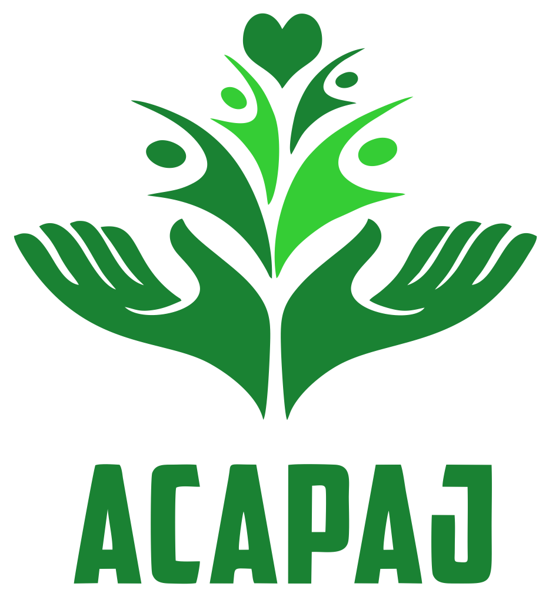
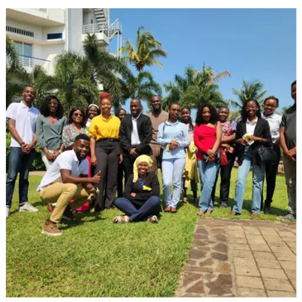
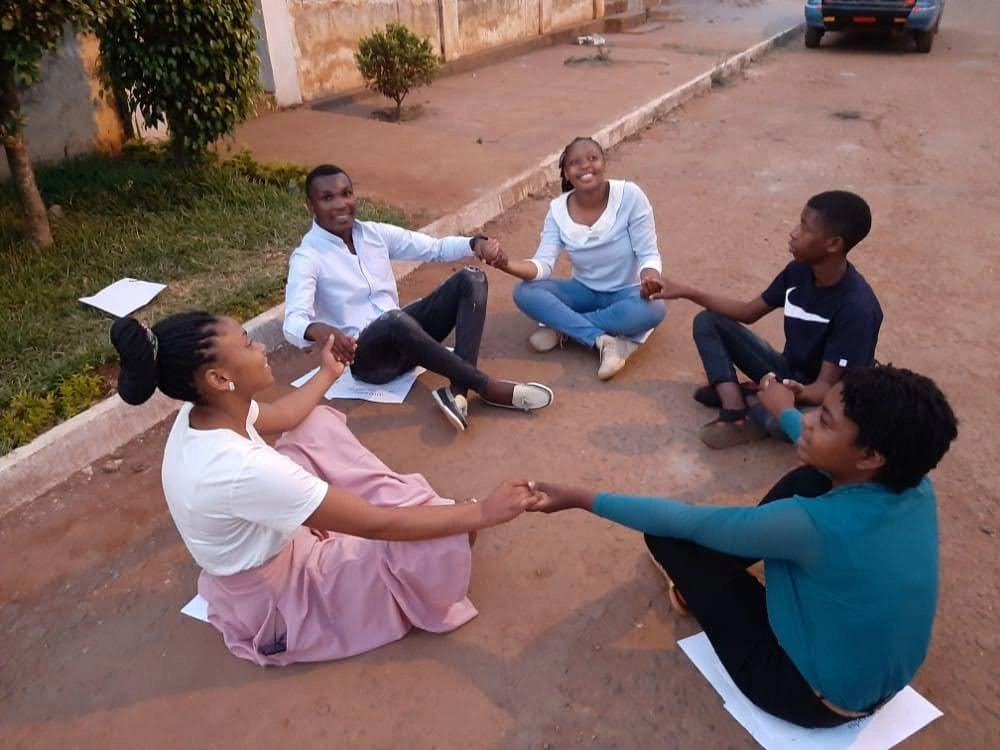
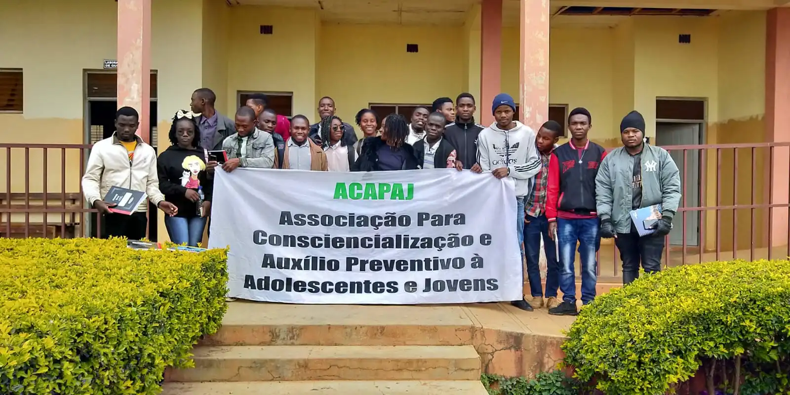
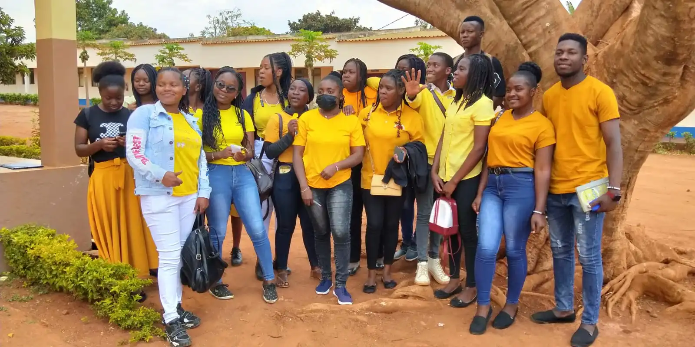
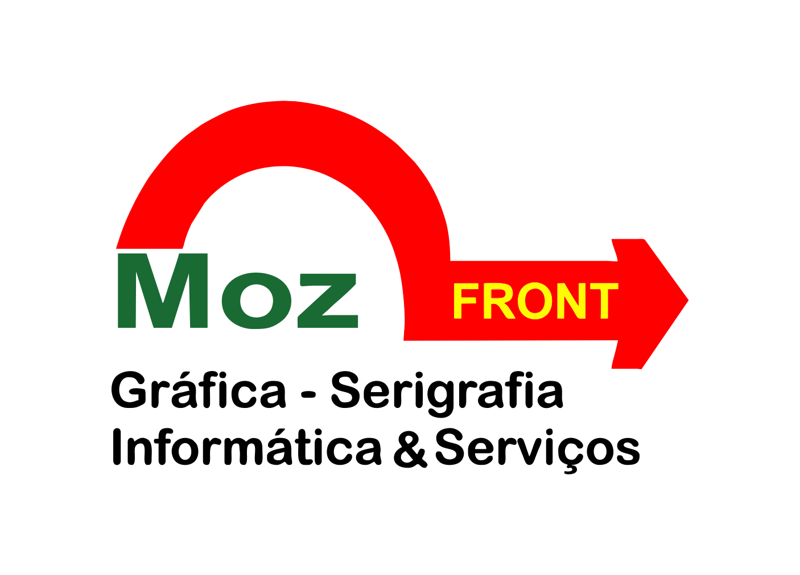

Construindo uma geração mais consciente, saudável e preparada para transformar Moçambique.
A ACAPAJ promove educação, apoio psicológico, prevenção social e desenvolvimento humano para adolescentes, jovens e comunidades.
Transformamos números em histórias reais
Desde 2021, cada acção representa uma oportunidade criada para adolescentes, jovens e comunidades em Moçambique.
+1100
Jovens e Adolescentes Impactados
2021
Ano de Fundação
+10
Pontos do País Alcançados
5
Anos de Trabalho Voluntário

Sobre a ACAPAJ
A Associação para a Consciencialização e Auxílio Preventivo a Adolescentes e Jovens é uma organização juvenil moçambicana criada em 2021, dedicada à promoção do bem-estar psicológico, do desenvolvimento pessoal e da inclusão social de adolescentes e jovens. Ao longo da sua trajectória, tem desenvolvido palestras, campanhas de sensibilização, actividades comunitárias, programas de capacitação e espaços seguros de diálogo.
Missão
Promover o bem-estar emocional, a consciencialização social e o desenvolvimento integral de adolescentes e jovens.
Visão
Ser uma referência nacional na promoção da saúde mental e prevenção de comportamentos de risco entre adolescentes e jovens.
Os nossos valores
Esperança
Acreditamos que cada jovem pode construir um futuro melhor.
Empatia
Ouvimos antes de agir, e cuidamos antes de orientar.
Cuidado
Tratamos cada história com atenção e respeito genuínos.
Transformação Pessoal
Criamos caminhos reais de crescimento e mudança duradoura.
Porque Existimos
Muitos adolescentes e jovens enfrentam desafios relacionados com saúde mental, exclusão social, violência, desemprego e falta de oportunidades. A ACAPAJ trabalha para criar caminhos de prevenção, orientação e desenvolvimento humano.
Áreas de Actuação
Psicologia e Saúde Mental
Apoio emocional, orientação psicológica e promoção do bem-estar dos adolescentes e jovens.
Prevenção Social
Consciencialização sobre riscos sociais e promoção de comportamentos positivos.
Educação e Capacitação
Desenvolvimento de competências pessoais, sociais e profissionais.
Nossos Projectos
Programas Juvenis
Actividades educativas e iniciativas de desenvolvimento pessoal, social e profissional para adolescentes e jovens.
Apoio Psicológico
Acompanhamento emocional, orientação psicológica e promoção da saúde mental.
Acções Comunitárias
Intervenções sociais destinadas a fortalecer comunidades e criar oportunidades.
Momentos que Inspiram




O impacto da ACAPAJ
"A ACAPAJ ajudou-me a desenvolver confiança e a acreditar mais no meu futuro."
Jovem participante
"As iniciativas desenvolvidas têm criado mudanças positivas na comunidade."
Parceiro comunitário
"Encontramos apoio, orientação e novas oportunidades através dos programas."
Beneficiário
Parceiros
Construímos alianças para ampliar o impacto das nossas iniciativas.

Torne-se Parceiro da Caminhada Amarela
Associe a sua marca a uma causa que salva vidas e fortaleça a sua responsabilidade social corporativa.
- Demonstrar compromisso com a saúde mental e o bem-estar da comunidade
- Reforçar a política de responsabilidade social corporativa
- Associar a marca a uma causa social relevante
- Promover uma cultura de prevenção, inclusão e valorização da vida
- Fortalecer a visibilidade junto da comunidade
Cada passo pode ser uma mensagem de esperança.
Cada parceria pode ajudar a salvar vidas. Juntos podemos criar mais oportunidades para adolescentes e jovens.
Entre em contacto
Estamos disponíveis para parcerias, voluntariado e apoio.